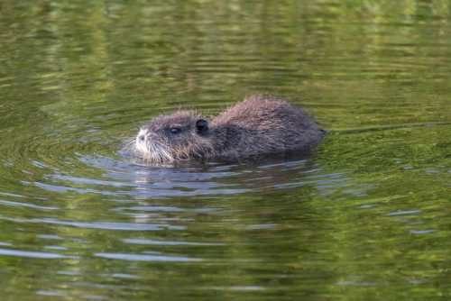
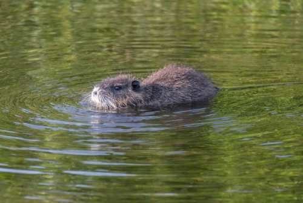
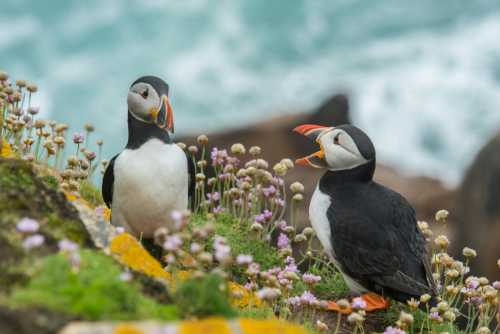
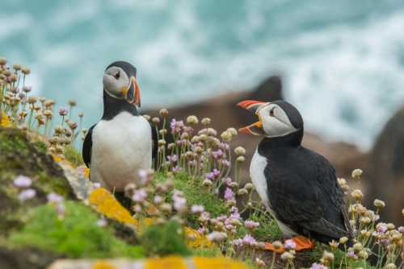
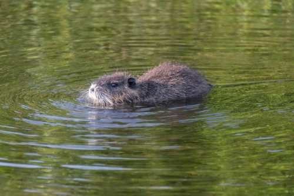
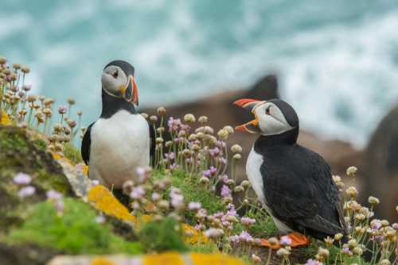

 

At our Wildlife Center, we believe every creature deserves a safe place to thrive. Founded with a passion for protecting nature, we are dedicated to rescuing animals, restoring habitats, and inspiring communities to care for the world we share.
To safeguard wildlife through conservation, education, and community involvement.
Dedicated caretakers, scientists, and volunteers who bring passion and expertise to protecting endangered species.
A future where animals and people live together in harmony, with thriving ecosystems across Britain.



Rescue and rehabilitation: Injured or displaced animals are cared for and released back into the wild when possible
Habitat restoration: Projects like replanting seagrass meadows, restoring wetlands, and reviving coral reefs help ecosystems recover

Species protection: Conservation groups prioritize species that are vital to food chains or ecosystems, such as pollinators or keystone predators
Climate action: Biodiversity projects also help mitigate climate change by preserving forests, wetlands, and oceans that store carbon